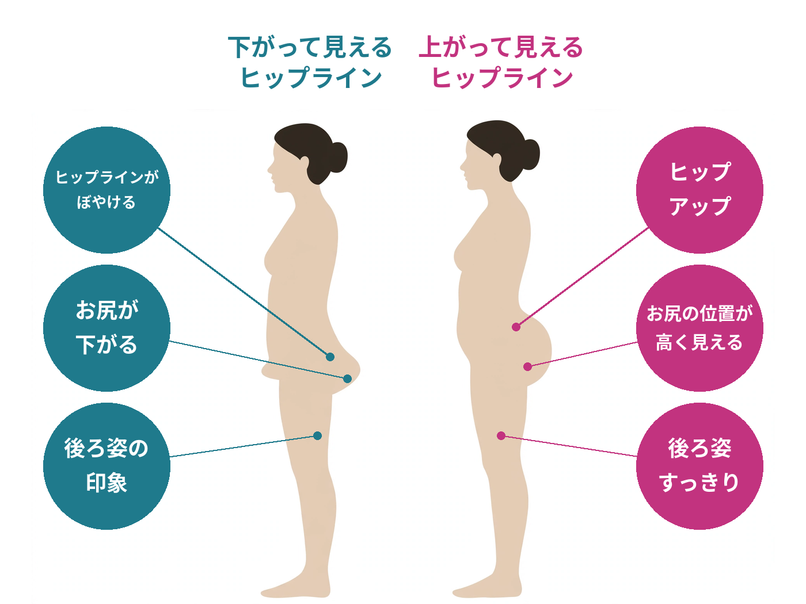

ヒップアップ・垂れ尻
美容整体ステラ・ポラリス東三国｜大阪市淀川区東三国・東三国駅徒歩5分・女性向け

骨盤底筋と大臀筋。骨盤を立てて上がるお尻を作る整体
お尻の形は、骨盤の傾きとお尻の筋肉（大臀筋など）の使い方で印象が変わります。座りっぱなしの生活が続くとお尻の筋肉が使いにくくなり、骨盤が後ろに倒れた姿勢では、お尻が下がって平たく見えやすくなると言われています。骨盤の底にある骨盤底筋も、姿勢を支える大切な筋肉群です。年齢とともに後ろ姿のラインが気になり始めた方に多いお悩みです。このページでは、お尻が下がって見える仕組みと、お尻の位置が高く見える姿勢を目指す当サロンでのケア、ご自宅でできるセルフケアをご案内します。まずは下のチェックで、ご自身の状態を確かめてみてください。
ご予約はこちら（Coubic）こんなお悩みありませんか
- 後ろ姿を見て、お尻が下がって平たくなった気がする
- お尻と太ももの境目が、ぼんやりしてきた
- パンツを履いたとき、後ろ姿のラインが気になる
- 長時間座る仕事で、お尻が潰れたような感覚がある
- 骨盤が後ろに倒れた姿勢になっている気がする
- 歩くとき、お尻の筋肉を使っている感じがしない
- 年齢とともに、後ろ姿の印象が変わってきたと感じる
当てはまる項目が多いほど、お尻の筋肉の使いにくさと骨盤の傾きが、後ろ姿の印象に影響している目安とされています。お尻の形は、筋肉と骨盤という土台の状態が表れる場所です。次のセルフチェックで、今の骨盤の傾きの傾向を確かめてみましょう。
簡単セルフチェック（壁立ちチェック）
壁を使った、骨盤の傾きと姿勢の傾向を知るための簡単な方法です。
- 壁に背を向けて立ち、かかと・お尻・背中・後頭部を壁につけます。
- 横から見た姿勢を意識しながら、お尻の位置と骨盤の傾き具合を確認します。
- お尻が壁から離れやすい、腰が丸まって骨盤が後ろに倒れる感じがする場合は、お尻の筋肉が使いにくい状態の目安と言われています。
※これは診断ではありません。ご自身の状態の傾向を知る目安としてお使いください。
ヒップアップ・垂れ尻の原因と仕組み
お尻の筋肉の使いにくさ
お尻の大きな筋肉である大臀筋は、歩く・立つ・階段を上るといった動きで働く、体の中でも大きな筋肉です。ところが、座りっぱなしの生活が続くと、この筋肉は使う機会が減り、働きが鈍りやすくなります。筋肉が使いにくい状態では、お尻は下がって平たく見えやすくなると言われています。図1のように、お尻の印象は筋肉の状態と骨盤の傾きの組み合わせで決まっていきます。

図1 お尻が下がって見える姿勢で起こりやすい変化と、お尻の位置が高く見える姿勢のイメージ。姿勢の状態には個人差があります。
骨盤の後ろ倒れ（後傾）
骨盤が後ろに倒れた姿勢では、お尻は下向きになり、位置が低く見えがちです。椅子に浅く座って背中を丸める姿勢が続くと、この後傾のクセがつきやすくなります。反対に、骨盤を立てた姿勢では、お尻は自然と上向きのラインに見え、後ろ姿全体が引き上がった印象になります。骨盤の傾きは、お尻の見え方を左右する土台です。
骨盤底筋と姿勢の支え
骨盤の底にある骨盤底筋は、内臓を下から支え、姿勢の安定にも関わる筋肉群です。この筋肉群の働きが弱くなると、骨盤まわりの安定感が下がり、姿勢の崩れにもつながると言われています。お尻のケアを考えるときは、表面の筋肉だけでなく、骨盤を支える土台全体を見ることが大切です。
後ろ姿の印象と年齢感
後ろ姿は自分では見えない分、写真や試着のときに変化に気づくことが多い場所です。お尻の位置が下がって見えると、全体のシルエットも重く見えがちです。反対に、お尻の位置が高く見える姿勢は、若々しく軽やかな後ろ姿の印象につながります。筋肉の使い方と骨盤の傾きという土台を整えることで、後ろ姿の印象は変えていけます。
セルフケアで足りる場合・サロンケアが向く場合
お尻の筋肉を使う感覚があり、簡単な体操を続ける余裕がある場合は、まずご自宅でのセルフケアを続けて様子を見る方法があります。一方で、お尻や腰まわりが自分ではゆるめにくい、お尻の筋肉を使う感覚がつかみにくい、後ろ姿の印象を本格的に整えたいという場合は、サロンでのケアが向いている目安になります。サロンでは、骨盤の傾きを確認し、お尻や腰、太ももの筋肉をゆるめたうえで、トレーナーの視点からお尻を使う感覚もご案内することで、施術後に「お尻の位置が上がった感じがする」と感じやすい状態を目指します。どちらが正解というものではなく、今の状態に合わせて選ぶことが大切です。
当サロンでのケア
当サロンのヒップアップケアは、「骨盤を立て、お尻の筋肉が使える状態」を目指す組み立てです。骨盤の傾きを確認しながら、部位と目的に合わせて3つの手技を組み合わせます。
美容整体：骨盤を立てた姿勢を整え、お尻の位置が高く見える土台をつくることを目的に進めます。
アロマオイルマッサージ：お尻や腰、太ももの筋肉をオイルで丁寧にゆるめ、巡りが流れやすい状態を目指します。香りに包まれるリラックス感の高いケアです。
もみほぐし：お尻の奥の固まりやすい筋肉をほぐし、あわせてトレーナーの視点から、お尻の筋肉を使う感覚をつかむための簡単なご案内も行います。
ケアを通して目指すのは、こんな変化です。
- お尻の位置が上がって見える、引き上がった後ろ姿の印象へ
- お尻と太ももの境目が感じられるラインへ
- 骨盤が立って、姿勢全体がまっすぐに見える印象へ
- 歩くときのお尻の使いやすさが感じられる体感へ
- パンツスタイルの後ろ姿が、すっきり見える仕上がりへ
施術後は立ち姿を鏡で確認し、後ろ姿のラインの印象や、歩くときのお尻の使いやすさの体感を一緒に確かめます。トレーナーの視点から、ご自宅で続けやすいお尻の体操もご案内しますので、日々のケアにもつなげていただけます。

施術の流れ
ご来店後、気になる部位やお悩み、ご希望の強さなどをうかがいます。完全個室のため、周りを気にせずお話しいただけます。
骨盤の傾きやお尻・腰まわりの状態、姿勢などを一緒に確認し、その日の状態に合わせた施術の進め方をご案内します。
美容整体を中心に、ご希望に応じてアロマオイルマッサージ、もみほぐしを組み合わせて進めます。強さは途中でも調整できます。
施術後の状態を確認し、ご自宅で続けやすいセルフケアのポイントをお伝えします。次回の目安についても、ご希望があればご案内します。
料金
| コース | 通常価格 | キャンペーン価格（12/25まで） |
|---|---|---|
| 80分 | ― | 3,000円 |
| 100分 | 10,000円 | 4,000円 |
| 120分 | ― | 5,000円 |
クリスマスキャンペーンは12月25日まで、ご新規様もリピーターの方も対象です。施術内容は当日の状態とご希望に合わせて組み立てます。
ご自宅でできるセルフケア
- ヒップリフト：仰向けで膝を立て、お尻を持ち上げて5秒キープします。10回を1セットとして、朝晩に行うのが目安です。お尻の筋肉を使う感覚を意識してください。
- お尻のストレッチ：椅子に座って片足を反対の膝に乗せ、体を前に倒します。左右それぞれ20〜30秒、1日1〜2回が目安です。
- 骨盤を立てる座り方：椅子に座るときは、お尻の骨（坐骨）で座る意識を持ち、背もたれに寄りかかりすぎないようにします。
- 階段の活用：階段を上るときは、お尻の筋肉を意識して一段ずつ上ります。日常の動きの中でお尻を使う機会を増やす工夫です。
ご自宅でのケアに：セルフケア資料ライブラリ（無料）
このお悩みに合わせたセルフケアの考え方を、無料の資料ライブラリでご紹介しています。
セルフケア資料ライブラリを開く →
受診の目安
股関節の痛みや脚のしびれを伴う場合は、施術の前に医療機関への受診をおすすめします。また、腰の強い痛みがある場合も、医療機関でご相談ください。
よくある質問
Q. 初めてでも大丈夫ですか？
はい。当サロンは完全予約制・完全個室で、1日3組までのご案内です。最初にカウンセリングで骨盤の状態や気になる部位をうかがい、無理のない内容から始めます。施術の前後で立ち姿を鏡で確認しながら「お尻の位置が上がった感じがする」「姿勢が伸びた」といった感覚の違いを一緒に確かめますので、初めての方も安心してご利用いただけます。
Q. 施術は痛いですか？
強さは、ご希望をうかがいながら調整します。お尻の奥の筋肉は圧を感じやすい部位ですが、お身体の状態に合わせた圧で丁寧に進めます。感じ方には個人差がありますので、施術中も遠慮なくお声がけください。
Q. コースはどう選べばいいですか？
80分・100分・120分のコースがあり、ケアしたい部位の広さやお時間のご都合に合わせて選べます。ヒップアップのケアで骨盤まわりからお尻、腰、太ももまでゆっくり整えたい方には、100分が選ばれることが多いコースです。迷われる場合は、ご予約の際にお気軽にご相談ください。
Q. 場所と予約方法を教えてください。
大阪市淀川区東三国、東三国駅から徒歩5分です。完全予約制のため、予約サイト（Coubic）またはLINE公式アカウントからご予約をお願いしています。
Q. 男性も受けられますか？
当サロンは女性向けのため、男性の方は、同じ東三国の男性専用整体院「北辰堂」をご案内しています。
施術者について
平賀建人（施術歴30年）
鍼灸師・登録販売者・アロマセラピスト・パーソナルトレーナーの資格を持ち、美容整体を中心に、アロマオイルマッサージ、もみほぐしを、その日の状態とご希望に合わせて組み合わせて施術します。このページの内容は、施術者の知識と経験をもとに作成しています。

料金・ご予約
ご新規様もリピーターの方も 12/25まで
80分 3,000円／100分 4,000円／120分 5,000円
通常価格は100分10,000円です。施術内容はご希望に合わせて組み立てます。
営業時間：月〜土 17:00〜23:00／日 10:00〜23:00（完全予約制）｜電話：080-2468-3086
大阪府大阪市淀川区東三国2丁目25番4号101（東三国駅徒歩5分）